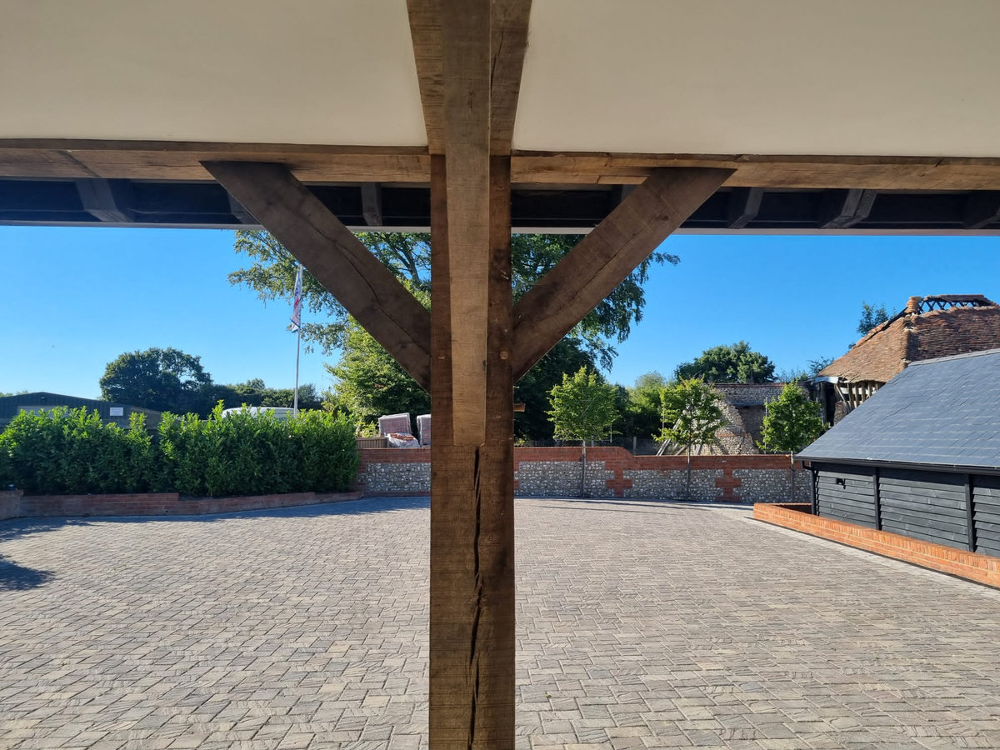
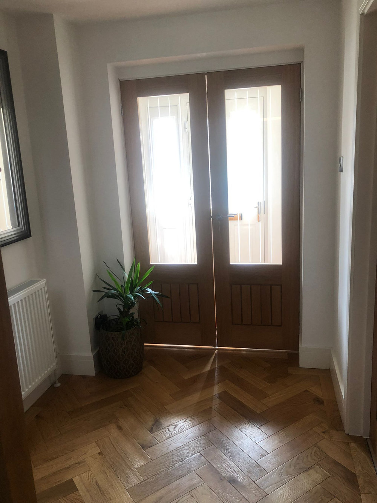
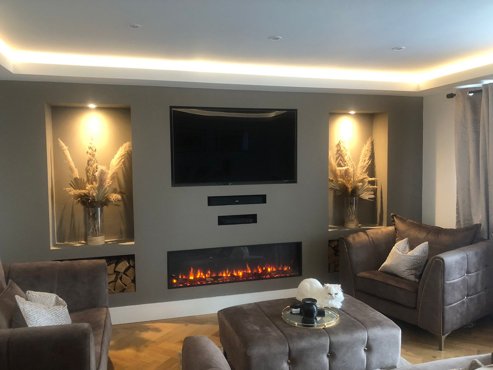

Carpenter wanted, Canterbury and East Kent
Join a small, busy carpentry firm known for its finish. Varied work, proper pay, and a boss who is still on the tools.
- Oak frames, new builds, kitchens and second fix
- A Guild of Master Craftsmen firm
- Attitude counts as much as years
The role at a glance
- Role
- Carpenter with a good finish [or improver: Ieuan to set]
- Base
- Canterbury, working on jobs across East Kent
- Work
- New builds, oak frames, garden rooms, extensions, kitchens, floors, doors and second fix
- Basis
- [Ieuan to set: employed or self-employed]
- Pay
- [Ieuan to set]
- Must have
- A full UK driving licence
- How we choose
- Your photos, a short call, then a paid trial day on a real job [Ieuan to confirm]
For carpenters who care how it looks when it is finished
We are a small carpentry firm in Canterbury, working across East Kent on everything from oak-framed garages and new builds to kitchens, media walls and herringbone floors. Our customers choose us for the finish. We need people who are proud of theirs.
Varied, proper work
No two jobs the same: oak frames built the old way, timber-framed houses, garden rooms, kitchens, doors, floors and second fix.
A boss who is still on the tools
Ieuan is a time-served carpenter from Builth Wells who has worked in Kent since 2014 and still cares about every cut. You will work alongside him.
Paid what you are worth
Our own words to customers: we cannot hire the best without paying what they are worth. [Ieuan to confirm the wording]
Who we are looking for
Attitude matters as much as years. If you care about the work and want to get better at it, we would like to hear from you.
You will fit in if you
- Hold a full UK driving licence and can get to jobs around East Kent
- Care how a door hangs, how an architrave meets a skirting, how a room looks when you leave it
- Want to work hard and turn up when you said you would
- Are happy to be shown how we like things done, and to show us what you know
- Have a finish you are proud of, or want to get there [Ieuan to set the minimum experience]
This is probably not for you if
- You think "close enough" is good enough
- You are not able to drive
- You need someone checking on you all day
- You are after the quickest job, not the best one
The kind of work you would do
All from jobs on our own website.



How we work with you
Set by Ieuan before this goes live. Every line below is a placeholder on purpose: we do not guess pay or terms.
Basis
[Employed or self-employed]
Pay
[Rate or salary]
Hours
[Days and hours]
Van and travel
[What we provide]
Tools
[What you bring, what we supply]
The work itself
Customers who chose quality, and jobs you will want to photograph.
How we choose
Quick for you, and fair: you will always hear back.
Apply
Five minutes on your phone.
Photos
A few jobs you finished yourself.
A call
15 minutes with Ieuan.
Trial day
On a real job. [Paid: Ieuan to confirm]
Start
Alongside Ieuan first, then your own pieces.
Sound like you?
Five minutes on your phone, plus photos of a few jobs you finished yourself.